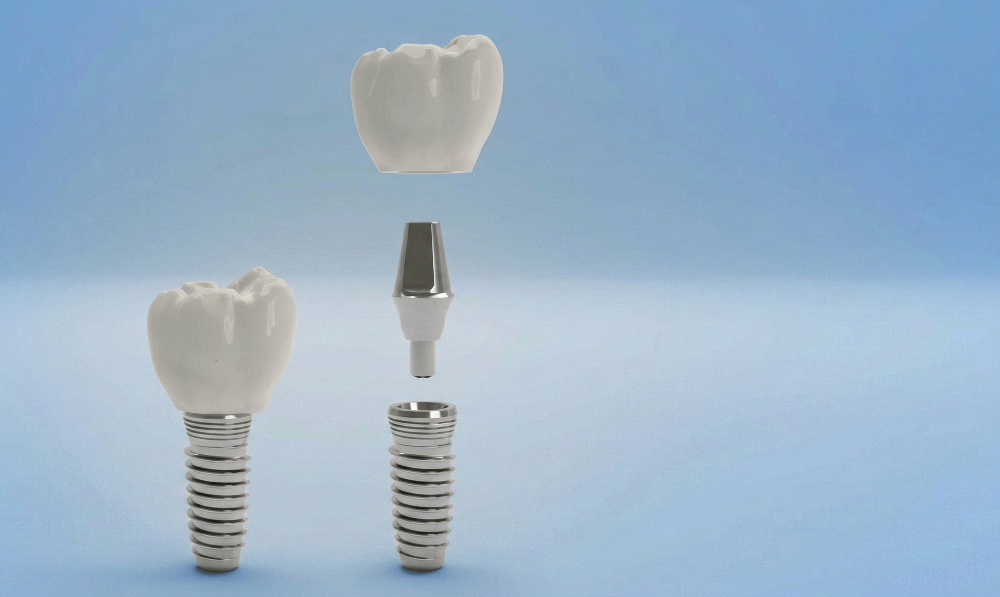
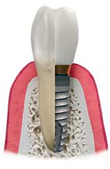
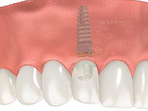
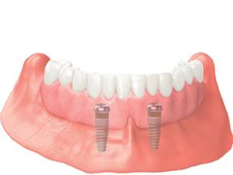
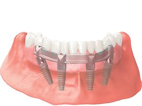

Dental Implants
A reliable, long-lasting, and natural-feeling substitute for missing teeth.
Replacing Missing Teeth
Speech, eating, and the appearance of your smile are all impacted by missing teeth, an issue that has plagued generations of people. Patients frequently accept that they will always have a gap in their teeth after losing a tooth. This is undoubtedly untrue, though, as getting dental implants is now simpler than ever.
A reliable and long-lasting substitute for a natural tooth are dental implants. The implant, which resembles a screw and is inserted into either the upper or lower jaw, serves as the ideal foundation for a crown or bridge and a permanent remedy for tooth loss. You may carry on with your regular activities with confidence knowing that your implants can perform daily chores just as well as natural teeth thanks to their precise fitting and titanium exterior.





Implants can be utilised in conjunction with a wide range of restorations and solutions, including alternatives for single and multiple teeth. Many of the people who think about them have removable bridges or traditional dentures for their upper and lower jaws. After receiving dental implant treatment, patient experience significant improvement in chewing ability.
Benefits Of Dental Implants
Generally durable and closely replicate the look and feel of a natural tooth, providing significant advantages compared to alternatives.
-
Durability
Titanium dental implants is considered a gold standard for replacing missing teeth often lasting longer than its alternatives and with a success rate above 97% for 10 years.
-
Prevents Bone Loss
The bone loss that happens when you lose a tooth may be avoided with dental implants. Your jawbone is no longer under tension in that area of your mouth when you lose a tooth. Your body reabsorbs and breaks down some of the bone tissue over time. Researchers found evidence that implants appear to have a discernible impact on the preservation of the alveolar ridge by slowing the rate of bone resorption.
-
Natural Look and Feel
Dental implant can act as an artificial root for the tooth. The implant is restored with a crown which can mimic the look and feel of a natural tooth.
-
Keep Adjacent Teeth Stable
Following loss of a tooth, adjacent and opposing teeth can migrate into the gap and cause problems with the bite and ability to chew. An implant retained crown replacing the missing tooth helps to keep health of surrounding teeth by preventing drifting.
-
Restores the Cosmetic Appearance of Face
Losing teeth can cause jawbone loss, which can change the form of your face and might result in a sunken appearance. Dental implants can help stop these alterations by maintaining your jaw's structural integrity and halting the loss of bone.
Further Advantages Include:
- Behaves like natural teeth when speaking and chewing.
- Restores bite force.
- Improves quality of life.
BioHorizons
Visit patient.biohorizons.com to learn everything you need to know about implants and grafting procedures. Their patient-dedicated websites deliver quality information in a dynamic, convenient and cost-effective way. Content includes convincing and easy to understand language, images, real patient testimonials and videos.
Learn more at BioHorizonsHave Questions?
For further information about dental implants and to find out if they are the right solution for you, please ask the dentist.
Call 0161 4349129
References
- Dutta SR, Passi D, Singh P, Atri M, Mohan S, Sharma A. Risks and complications associated with dental implant failure: Critical update. Natl J Maxillofac Surg. 2020 Jan-Jun;11(1):14-19.
- French D, Ofec R, Levin L. Long term clinical performance of 10 871 dental implants with up to 22 years of follow-up... Clin Implant Dent Relat Res. 2021 Jun;23(3):289-297.
- Taylor M, Masood M, Mnatzaganian G. Longevity of complete dentures: A systematic review and meta-analysis. J Prosthet Dent. 2021 Apr;125(4):611-619.
- Lin HK, Pan YH, Salamanca E, Lin YT, Chang WJ. Prevention of Bone Resorption by HA/β-TCP + Collagen Composite after Tooth Extraction: A Case Series. Int J Environ Res Public Health. 2019 Nov 21;16(23):4616.
- Khalifa AK, Wada M, Ikebe K, Maeda Y. To what extent residual alveolar ridge can be preserved by implant? A systematic review. Int J Implant Dent. 2016 Dec;2(1):22.
- Adler L, Liedholm E, Silvegren M, Modin C, Buhlin K, Jansson L. Patient satisfaction 8-14 years after dental implant therapy - a questionnaire study. Acta Odontol Scand. 2016 Jul;74(5):423-9.
- Fonteyne E, Van Doorne L, Becue L, Matthys C, Bronckhorst E, De Bruyn H. Speech evaluation during maxillary mini-dental implant overdenture treatment: A prospective study. J Oral Rehabil. 2019 Dec;46(12):1151-1160.
- Hasan I, Madarlis C, Keilig L, Dirk C, Weber A, Bourauel C, Heinemann F. Changes in biting forces with implant-supported overdenture in the lower jaw... Ann Anat. 2016 Nov;208:116-122.
- Doornewaard R, Glibert M, Matthys C, Vervaeke S, Bronkhorst E, de Bruyn H. Improvement of Quality of Life with Implant-Supported Mandibular Overdentures... J Clin Med. 2019 May 31;8(6):773.